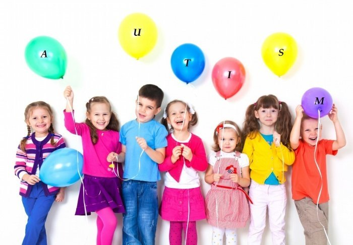

Autismul este o tulburare de dezvoltare considerată drept una dintre cele mai severe tulburări neuropsihiatrice ale copilăriei. Autismul este tulburarea centrală din cadrul unui întreg spectru de tulburări de dezvoltare, cunoscut sub numele de spectrul tulburărilor autismului/autiste sau de tulburări pervazive de dezvoltare.
